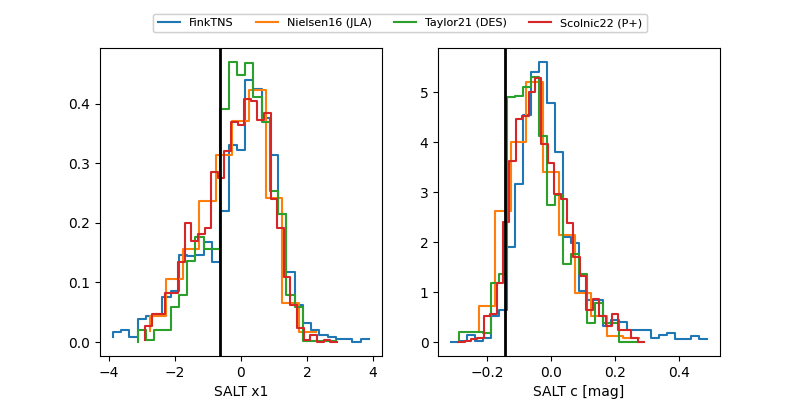

FINK: ZTF25abluvyy
Lasair: ZTF25abluvyy
ALeRCE: ZTF25abluvyy
TNS: 2025vqj
YSE: 2025vqj
ZTF25abluvyy (ztf,fink)
2025vqj (tns,yse)
ATLAS25kqf (atlas)
PS25hig (panstarrs)
equatorial (ra, dec) = (30.3163,+9.00703)
galactic (l, b) = (150.4406,-50.09799)

last atlasc=19.33, atlaso=20.18, ztfg=20.37, ztfr=20.24
3 atlasc, 1 atlaso, 6 ztfg, 8 ztfr detections